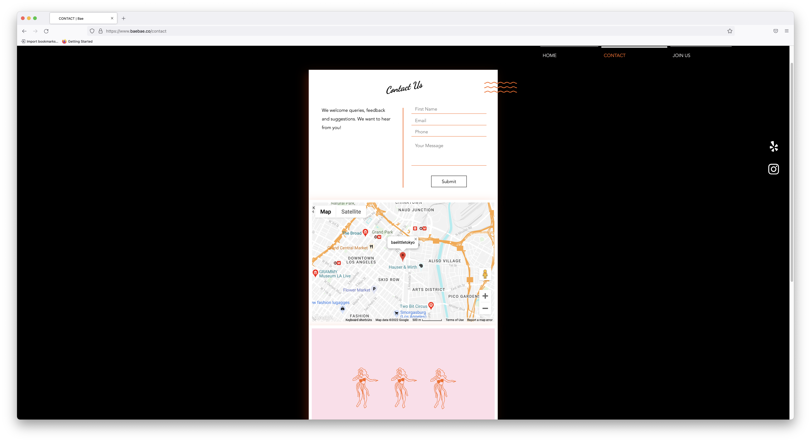
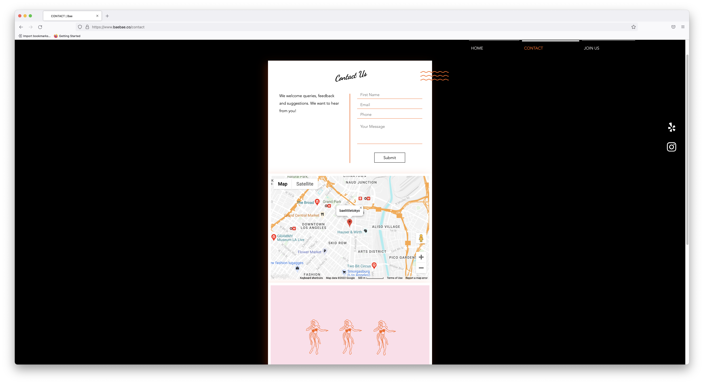

Final project proposal
Introduction
Dorothea's Ice Cream
Dorothea's offers modern spins on classic flavors, providing a refreshingly nostalgic experience. With an aesthetic that combines nostalgic comfort with trendy appeal, it can attract a wide array of customers. It is conveniently located in a beach town in California, which draws in a lot of tourists in the summer time.
Target audience
Users of this site will be people who want ice cream, or plannign a trip to the area.
They want to see what our company has to offer, how it is different than other nearby ice cream shops, our menu, pricing, and location. They will also need contact information for any questions they have that are not answered by the website.
Comparative analysis
Somi Somi


Bae Ice Cream
 

Dear Bella Creamery


Website content
Home
Welcome to Dorothea's
At Dorothea's, we serve modern presentations of classic flavors, creating memories that will last for generations.
[image of the inside of an ice cream shop]
Menu
[image of a bunch of scoops of ice cream]
Flavors
- Vanilla Bean
- German Chocolate
- Summer Strawberry
- Brownie Cookie Crumble
- Butterscotch
- Chocolate Covered Cherry
- Berries 'n' Cream
- Milk and Cookies
- Dark Chocolate Spearmint
Sizes
Cup
-
Small
$3.50
-
Medium
$4.00
-
Large
$4.50
Cone
-
Small
$4.50
-
Medium
$5.00
-
Large
$5.50
Find Us
[image of the outside of an ice cream shop]
Our Address:
1234 Seaside BlvdCayucos, Ca
Our Contact Info:
Phone: (805)123-4567
Email: hello@dorotheas.com
Hours:
noon to midnight, every day
Our Story
[image of 2 women holding ice cream cones and smiling]
As do many great businesses, Dorothea's started out as a hobby. When we retired to the small beach town of Cayucos, California, we loved having our grandchildren visit during the summers.
One summer, we decided to make some ice cream from scratch as a fun science experiment for the kids. Five summers later, our grandkids had started bringing friends, and finding friends on the beach, and inviting a bunch of folks back to the house for ice cream every afternoon.
When we had kids lining up at our door every day from May to August, we knew we had to make this ice cream more accessible for these kids. This led to us opening the doors of Dorothea's the next spring, and we have been serving refreshingly nostalgic ice cream to folks of all ages ever since then!